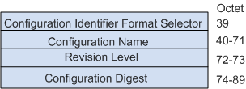
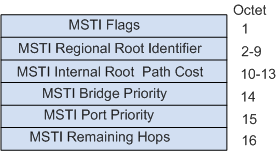

| 字段内容 | 说明 |
|---|---|
| Protocol Identifier | 协议ID＝“0” |
| Protocol Version Identifier | 协议版本标识符，STP为0，RSTP为2，MSTP为3。 |
| BPDU Type | BPDU类型，MSTP为0x02。
|
| Flags | 对于“标记域”（Flags），第一个bit（左边、高位bit）表示“TCA（拓扑改变响应）”，最后一个bit（右边、低位bit）表示“TC（拓扑改变）”。 |
| Root Identifier | 网桥ID都是8个字节——前两个字节是网桥优先级，后6个字节是网桥MAC地址。 |
| Root Path Cost | 根路径开销，本端口累计到根桥的开销。 |
| Bridge Identifier | 发送者BID，本交换机的BID。 |
| Port Identifier | 发送端口PID，发送该BPDU的端口ID。 |
| Message Age | 该BPDU的消息年龄。 |
| Max Age | 消息老化年龄。 |
| Hello Time | 发送两个相邻BPDU间的时间间隔。 |
| Forward Delay | 控制Listening和Learning状态的持续时间。 |
在BPDU的格式上，除了保证和STP格式基本一致之外，RSTP作了一些小的变化。一个是在Type字段，配置BPDU类型不再是0而是2，版本号也变成了2。所以运行STP的交换机收到该类BPDU时会丢弃。
另一个变化是在Flag字段，把原来保留的中间6位使用起来。这样改变了的配置BPDU叫做RST BPDU。
RSTP Flag字段格式：
多生成树协议MSTP是生成树协议的一种，用于消除网络环路，它兼容生成树协议STP和快速生成树RSTP协议，并且弥补了两者的缺陷。
MSTP使用多生成树桥协议数据单元MST BPDU（Multiple Spanning Tree Bridge Protocol Data Unit）作为生成树计算的依据。 MST BPDU报文用来计算生成树的拓扑、维护网络拓扑以及传达拓扑变化记录。MST BPDU报文结构如下图所示：
无论是域内的MST BPDU还是域间的，前35个字节和RST BPDU相同。
从第36个字节开始是MSTP专有字段。最后的MSTI配置信息字段由若干MSTI配置信息组连缀而成。
MST BPDU中的主要信息如下表所示。
| 字段 | 说明 |
|---|---|
| Protocol Identifier | 协议标识符。 |
| Protocol Version Identifier | 协议版本标识符，STP为0，RSTP为2，MSTP为3。 |
| BPDU Type | BPDU类型，MSTP为0x02。
|
| CIST Flags | CIST标志字段。 |
| CIST Root Identifier | CIST的总根交换机ID。 |
| CIST External Path Cost | CIST外部路径开销指从本交换机所属的MST域到CIST根交换机的累计路径开销。CIST外部路径开销根据链路带宽计算。 |
| CIST Regional Root Identifier | CIST的域根交换机ID，即IST Master的ID。 如果总根在这个域内，那么域根交换机ID就是总根交换机ID。 |
| CIST Port Identifier | 本端口在IST中的指定端口ID。 |
| Message Age | BPDU报文的生存期。 |
| Max Age | BPDU报文的最大生存期，超时则认为到根交换机的链路故障。 |
| Hello Time | Hello定时器，缺省为2秒。 |
| Forward Delay | Forward Delay定时器，缺省为15秒。 |
| Version 1 Length | Version1 BPDU的长度，值固定为0。 |
| Version 3 Length | Version3 BPDU的长度。 |
| MST Configuration Identifier | MST配置标识，表示MST域的标签信息，包含4个字段： 
只有MST Configuration Identifier中的四个字段完全相同的，并且互联的交换机，才属于同一个域。 |
| CIST Internal Root Path Cost | CIST内部路径开销指从本端口到IST Master交换机的累计路径开销。CIST内部路径开销根据链路带宽计算。 |
| CIST Bridge Identifier | CIST的指定交换机ID。 |
| CIST Remaining Hops | BPDU报文在CIST中的剩余跳数。 |
| MSTI Configuration Messages (may be absent) | MSTI配置信息。每个MSTI的配置信息占16 bytes，如果有n个MSTI就占用n×16bytes。单个MSTI Configuration Messages的字段说明如下： 
|
| 标准 | 描述 |
|---|---|
| IEEE Std 802.1S | Virtual Bridged Local Area Networks—Amendment 3: Multiple Spanning Trees |
| IEEE Std 802.1D | Information technology—Telecommunicationsand information exchange between systems—Local and metropolitan area networks—Common specifications—Part 3:Media Access Control (MAC) Bridges.] |
| IEEE Std 802.1W | IEEE Standard for Information technology—Telecommunications and information exchange between systems—Local and metropolitan area networks—Common specifications—Part 3: Media Access Control (MAC) Bridges—Amendment 2: Rapid Reconfiguration. [Amendment to IEEE Std 802.1D, 1998 Edition (ISO/IEC 15802-3:1998) and IEEE Std 802.1t-2001]. |